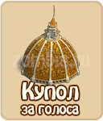

Получено: файл; исходный URL. Первая иллюстрация строки каталога; авторство не подтверждено. Идентичность изображения при замене домена не проверена. Страница: источник.

Купол за голоса
браузерная версия; платформа и дата редакции не установлены- Тип
- Постройка
- Версия и дата
- браузерная версия; платформа и дата редакции не установлены
Данные по источнику · браузерная версия; платформа не установлена · дата редакции списка не установлена
Предварительно: Прочитан список. Имена файлов пиктограмм приводятся как есть: они не гарантируют идентификацию материала. Alt-атрибуты источника содержат ошибки. Отдельная статья и дата не проверены.. Требуется сверка.
- Сведения из списка, включая имена файлов пиктограмм
- [рисунок: cupo_golosa.png] 35 голосов доступен с 1 уровня Стадии строительства Купола за голоса: 1. 080 [рисунок: Bloki.png] + 050 [рисунок: kuvalda.png] + 005 [рисунок: bigudi.png] 2. 120 [рисунок: doska.jpg] + 100 [рисунок: Krasnaya_cherepica.png] + 030 [рисунок: fanera.png] 3. 100 [рисунок: Sinyaya_cherepica.png] + 010 [рисунок: bigudi.png] + 100 [рисунок: Gvozdi.png] 4. 120 [рисунок: cement.jpg] + 100 [рисунок: voda.png] + 050 [рисунок: List_zolota.png] 5. 001 [рисунок: kapitan.png] + 080 [рисунок: kirpichi.png] + 015 [рисунок: bigudi.png] В Куполе за голоса можно создавать: [рисунок: island_hope.png] = 33 [рисунок: mir.jpg] + 5 [рисунок: zolotaya_ribka.jpg] При помощи купола вы можете превращать старые острова в новые. Перед превращением, пожалуйста, позаботьтесь о том, чтобы остров был пустой. Т.к. после превращения все находящиеся на острове постройке исчезнут.
Данные по источнику · браузерная версия; платформы и редакции могут различаться · даты статей в адресах; дата последней редакции неизвестна
Предварительно: Фанатские источники; совпадение сведений не гарантирует независимость. Условия в разные периоды могли изменяться.. Требуется сверка.
- Стоимость и стадии
- Источник указывает 1-й уровень, 35 голосов, 650 опыта за покупку и 1900 всего. Стадия 1: 80 блоков, 50 кувалд, 5 бигуди; 2: 120 досок, 100 красной черепицы, 30 фанеры; 3: 100 синей черепицы, 10 бигуди, 100 гвоздей; 4: 120 цемента, 100 воды, 50 листов золота; 5: 1 капитан, 80 кирпичей, 15 бигуди. Во второй стадии подпись ссылки ошибочно говорит «Гвозди», но текст и рисунок указывают фанеру.
- Превращение островов
- Исторически позволял превращать некоторые старые острова в новые; источник предупреждает, что оставшиеся постройки, ресурсы и декорации при превращении исчезнут. Примеры: Остров Надежды — 33 Мир и 5 золотых рыбок; Новые пещеры Зу — 45 угля и 15 Z-кнопок. Статья могла обновляться; не переносить рецепты на вариант за зомбаксы без проверки.
Связанные сущности
нет проверенных связей — требуется сверка.